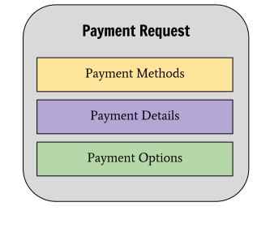
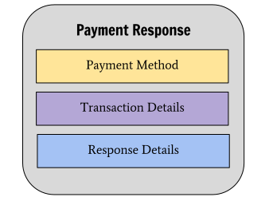
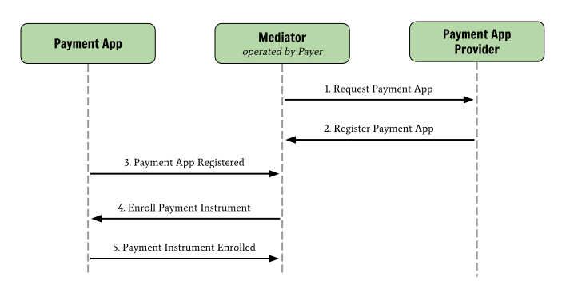
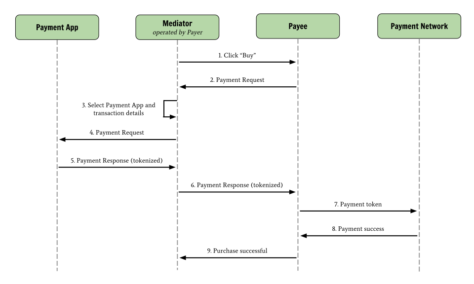

This document outlines the Web Payments ecosystem by introducing readers
to the goals of the ecosystem, messages, roles, and information flow in
the system. Links to specifications that detail each aspect of the
ecosystem in more detail are also provided for implementers.
This is an experimental specification.
Introduction
This document outlines the Web Payments ecosystem. It starts by highlighting
the goals of the ecosystem, then covers the primary types of messages
exchanged and the roles of participants in the system. An example use case
is then used to demonstrate how roles in the system communicate. Finally,
specifications that detail each aspect of the ecosystem in more detail
are also provided for implementers.
Web Payments Goals
The Web Payments ecosystem strives to support fundamental Web principles
by:
Adhering to Web architecture fundamentals
Supporting network and device independence
Providing accessibility for payers and payees with disabilities
Being machine-readable where possible to enable automation and engagement of non-human entities
Protecting the privacy of all participants
In addition to the fundamental Web principles above, the Web Payments
ecosystem also strives to:
Improve the interface experience for all stakeholders
Provide stakeholders with unencumbered knowledge and choice when undertaking a payment
Support a wide spectrum of security and privacy needs to meet industry expectations
Support existing payment schemes while enabling new ones
Encourage efficient settlement
Facilitate compliance with legal and regulatory obligations
Enable monetization on the spectrum of Web to native apps
Bridge distributed value networks
The Structure of Payment Messages
A payment request is composed of the following parts:
Payment Methods
The methods of payment that may be used for processing the payment request.
Examples include: credit card, direct debit, SEPA Credit Transfer, and Bitcoin.
Payment Details
Specific information pertaining to the transaction. Examples include: price,
transaction reference number, and items being purchased.
Payment Options
A set of information that needs to be collected from the payer in order for
the transaction to be fulfilled. Examples include: shipping options,
requests for shipping address, and requests for contact information.

- The structure of a payment request.
A concern has been raised over the structure of a payment request, notably
that there are other forms of messages that may be initiated by a payer. There
is currently a proposal to modify payment request to a more generalized
"payment instruction" that would be capable of expressing other messages like
subscriptions, preauthorizations, refunds, and other sorts of payment-related
instructions.
A payment response is composed of the following parts:
Payment Method
The selected mechanism that was used for processing the payment. Examples
include: credit card, ACH, SEPA, and Bitcoin.
Transaction Details
Specific information pertaining to the transaction. Examples include:
transaction reference number, price, and items purchased.
Response Details
Information that pertains to the result of processing the payment including
all information requested in the initial payment request. Examples include:
selected shipping option, shipping address, and contact email.

- The structure of a payment response.
Roles in the Ecosystem
There are a number of roles and interactions in the Web Payments ecosystem.
A role is an abstraction that might be implemented in many different ways. The
separation of roles suggests likely interfaces and/or protocols for
standardization. The following roles exist in the Web Payments
ecosystem:
Payer
An entity transmitting value to the Payee.
Payee
An entity receiving value from the Payer.
Mediator
Routes payment requests between the Payee and the Payment App.
Payment App
Processes payment request sent via the Mediator and returns
payment responses to the Mediator. It may communicate with Payment Networks
to execute a payment instruction or it may return data so that another
entity can execute a payment instruction.
Payment Network
A system that is responsible for transferring value from one entity to another.
- Roles in the Web Payments ecosystem
As the diagram above depicts, the Web Payments ecosystem separates the
following concerns:
The role that creates the payment request (Payee) is separated from the
role that routes the payment request to the entity that will process it
(Mediator).
The role that routes the payment request (Mediator) is separated from
the role that processes the payment request (Payment App).
The role that processes the payment request/response
(Payment App/Payee) is separated from the role that transfers the value
associated with the request/response (Payment Network).
An Exemplary Use Case
In order to understand how all of the actors and roles in the ecosystem
interact, consider the following use case:
Quinn would like to purchase a new laptop using her new security-enhanced
credit card.
Payer Registers Payment App
Note that this section is currently speculative and will be updated once
consensus forms around a corresponding payment application registration
specification, which is currently under development.
In order for Quinn (Payer) to use her new security-enhanced credit card, she
must enroll it via her bank's website (Payment App).

- The Payer Registers a New Payment App
Payer Makes a Purchase
Quinn (Payer) finds the laptop she wants on a website (Payee). She
clicks "Buy", selects the information necessary to complete the transaction,
and is notified that her purchase is successful and is on its way.

- Payer Makes a Purchase
Implementing Web Payments Software
There are a number of specifications that are of interest to developers
implementing portions of the ecosystem outlined in this document.